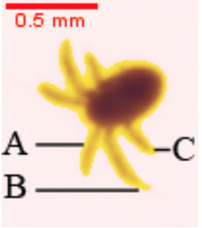

Guide des organismes mésozooplanctonique de la baie de Calvi
Basé sur le training set : _train_classif3
Ce guide a pour objectif de présenter les différents groupes utilisé …
1 Cnidaria
1.1 Hydrozoa
1.1.1 Sipho calycophora nectophores
Ordre appartenant aux Cnidaria, les Siphonophorae sont des organismes coloniaux. Les organismes d’une colonie sont appelés zoïdes et sont disposés le long d’un stolon. Les zoïdes sont différenciés selon leur fonction au sein de la colonie. On peut ainsi distinguer, selon les 3 sous-ordres des Siphonophorae, les gonozoïdes (fonction reproductrice), dactylozoïdes (fonction défensive), gastrozoïdes (fonction digestive), pneumatophore (fonction de flottaison) ou encore les nectophores (fonction locomotrice) (Licandro, Carré, et Lindsay 2017; Lakkis, Sami 2013a) . Seuls ces derniers zoïdes sont considérés dans cette étude. Outre leur forme particulière, ils possèdent souvent un nectosac visible (Kirkpatrick et Pugh 1984) . Le sous-ordre des Cystonectae ne possède pas de nectophores (Licandro, Carré, et Lindsay 2017), et n’est donc pas considéré lors de cette étude.

1.2 Scyphozoa
Les Scyphyzoa forment une classe au sein des Cnidaria (Licandro, Fischer, et Lindsay 2017). Dans cette classe, seuls les stades larvaires (ephyra) sont considérés. Ces larves sont reconnaissables de par leur forme étoilée à 8 rayons (Lakkis, Sami 2013b)

2 Copepoda
Les trois ordres de copépodes les plus abondants au niveau de la baie de Calvi sont considérés: Calanoida, Cyclopoida et Poecilostomatoida. Une étude récente tend cependant à inclure les Poecilostomatoida au sein des Cyclopoida (Khodami et al. 2017)
Dans ce guide, où le set d’apprentissage a été en 2016, l’ancienne taxonomie est utilisée.
Les Copepoda occupent une part importante dans la littérature sur le zooplancton grâcenotamment à leur distribution ubiquiste et à leur importance dans les réseaux trophiques marins. Ils sont également considérés comme les animaux multicellulaires les plus abondants sur terre (Richardson, 2008) (Richardson 2008).
Le corps des copépodes peut se subdiviser en trois parties : la tête (céphalosome), le thorax (métasome) et l’abdomen (urosome) dont la forme respective est un critère de différentiiation taxonomique important (Wooton et Castellani 2017).

2.1 Gymnoplea
Le Super-ordre des Gymnoplea comprend l’ordre de Calanoida. Cet ordre comprend le plus grand nombre d’espèces au sein des copépodes. Ceux-ci possèdent généralemetn des antennules plus grandes que les céphalosome, ainsi qu’un urosome plus petit que le prosome (céphalosome + métasome) (Wooton et Castellani 2017).
2.2 Podoplea
2.2.1 Cyclopoida
Ce clade possède un urosome aussi long que le prosome, ainsi que des antennules généralement plus grandes que le céphalosome (Wooton et Castellani 2017).

2.2.2 Poecilostomatoida
Ce taxon comprend des espèces de formes variables. Les antennules sont ici plus petites que le céphalosome (Wooton et Castellani 2017). Seuls les individus appartenant aux familles des Corycaeidae et des Oncaeidae sont ici considérés
3 Crustacea other
3.1 Cladocera
Les Cladocera forment un super-ordre au sein de la classe des Branchiopoda. Ceux-ci sont aisément reconnaissables de par leurs yeux composés généralement bien visibles, mais également par la présence fréquente d’une épine terminale au niveau de la carapace (Castellani 2017). Ces organismes présentent un corps plutôt transparent au niveau de la partie dorsale.

3.2 Megalopa - Krill - Zoea
Cette classe, très hétérogène, est composée de certains stades larvaires de l’ordre des Decapoda, ainsi que des individus de l’ordre des Euphausiacea.
La larve zoea est la première forme larvaire libre chez les Decapoda, à l’exception du sous-ordre des Dendrobranchiata qui est précédé d’un stade nauplius. Chez ce sous-ordre, la larve zoea est également appelée mysis.
Le stade suivant chez les Decapoda est appelé decapodid, ou encore megalopa chez les Anomoura et Brachyura. Tous sont ici considérés.
Enfin, l’ordre des Euphausiacea, communément appelé krill, est également intégré dans cette classe pour les stades allant du calyptopys à l’adulte.
Au vu de la grande variabilité des formes observées dans cette classe, il est compliqué de présenter une caractéristique typique permettant de discriminer cette classe, il est même parfois difficile de différencier les stades entres eux (Buckland, Castellani, et Dos Santos 2017).

3.3 Nauplius
La larve nauplius libre correspond au premier stade de développement après éclosion d’un bon nombre de crustacés. Ceux-ci comprennent les taxa des Cephalocarida, Branchiopoda, Ostracoda, Mystracocarida, Copepoda, Cirripedia, Ascothoracida, Facetotecta, Euphausiacea et les Dendrobranchiata.
Ce stade larvaire est caractérisé par au moins trois paires d’appendices (antennules, antennes et mandibules) ainsi que d’un oeil nauplien médian, généralement non-distinguable sur les vignettes (Dahms, 2000).


4 Tunicata - Chaetognatha
4.1 Chaetognatha
Les Chaetognatha, organismes carnivores, forment un phylum où une septantaine d’espèces sont pélagiques. Ils possèdent un corps séparé en trois parties (tête, tronc et queue) bien visibles, et sont surtout reconnaissables par la présence de crochets au niveau de la tête (Pierrots-Bults 2017).


4.2 Tunicata
4.2.1 Appendicularia
4.2.1.1 Appendicularia complete
Les Appendicularia forment une classe au sein des Tunicata. Contrairement aux chaetognathes, leur corps est subdivisé en deux parties : le tronc et la queue. Le tronc secrète une « maison gélatineuse », qui sert à l’alimentation de l’organisme par filtration de petites particules présentes dans l’eau. Cependant, elle est généralement absente ou endommagée si l’échantillonnage est effectué avec un filet (Gorsky et Castellani 2017).


4.2.1.2 Appendicularia tails
Il n’est pas rare que, lors de l’échantillonnage, le tronc et la queue de l’appendiculaire se retrouvent séparés (Michaels et al. 1990). Ces queues sont reconnaissables de par leur forme étirée, ainsi que par la bande plus dense formée par les muscles de la queue. La notochorde peut parfois être visible, apparaissant comme une zone plus claire au milieu de la masse musculaire (Gorsky et Castellani 2017).

4.2.2 Thaliacea
A l’instar des Appendicularia, les Thaliacea forment une classe au sein des Tunicata. Dans cette étude, seules les familles Doliolidae et Salpidae sont considérées. Celles-ci possèdent une forme de baril, et sont aisément reconnaissables de par les bandes musculaires qui encerclent le corps (Licandro et Castellani 2017).


5 Zooplankton other
5.1 Aulocantha scolymantha
Anciennement classé dans les Radiolaria, Aulacantha scolymantha se retrouve actuellement dans le phylum des Cercozoa au sein de la sous-classe des Phaeodaria (Sierra et al. 2013). Il s’agit d’un protiste holoplanctonique hétérotrophe (Nakamura et Suzuki 2015) .
La partie dense au centre comprend la capsule centrale (qui contient le noyau et l’endosplasme) et le phaeodium, une masse de particules brunes. La partie plus claire en périphérie correspond au scleracoma, qui désigne les parties squelettiques siliceuses de l’organisme (Nakamura et Suzuki 2015).

5.2 Cavolinia
Cette classe regroupe les individus du genre Cavolinia. Ceux-ci sont des mollusques holoplanctoniques appartenant à la classe des Gasteropoda. Ces organismes sont reconnaissables par leur épine caudale et par leurs projections latérales (Lischka et Ossenbrügger, 2017) (Lischka et Ossenbrügger 2017).

5.3 Eggs
Bon nombre de taxa marins se retrouvent sous forme d’œuf au cours de leur cycle de vie (Moran et McAlister, 2009) (Moran et McAlister 2009). Ces œufs sont généralement sphériques et possèdent majoritairement un contenu vitellin visible.

5.4 Pisces larvae
Les téléostéens possèdent majoritairement un stade planctonique au cours de leur vie. Il s’agit donc de méroplancton. Ces individus sont aisément reconnaissables grâce à leur nageoire primaire qui s’étend sur presque tout le long de l’organisme ainsi que par la présence d’yeux déjà visibles. Les nageoires pectorales peuvent parfois être observées dès les premiers stades larvaires (Munk et Nielsen 2017).

6 alter
Les classes citées ci-dessous représentent principalement des artéfacts et/ou des particules non planctoniques et ne sont pas considérées dans cette étude. Ces classes ont été créées pour éviter la contamination des classes planctoniques d’intérêt par ces particules (Fullgrabe, 2016). Le fait de ne pas inclure les objets multiples dans le dénombrement conduit donc à une très légère sous-estimation des comptages, sachant que les objets multiples ne représentent jamais plus que quelques pourcents de l’ensemble des particules, typiquement moins de \(1\) à $2 $ .
6.1 background noise
Cette classe représente les artéfacts liés à la présence de petites particules en arrière-plan.

6.2 fibers and scratches
Cette classe correspond aux fibres retrouvées dans l’eau, ainsi que les possibles griffes sur les cellules en polystyrène utilisées pour contenir les échantillons scannés.

6.3 multiple
Les éléments qui se chevauchent, de quelque nature qu’ils soient, se retrouvent classés ici. Lors du remplissage des cellules destinées au scanner, un des objectifs est d’obtenir une densité suffisante pour être représentative de l’échantillon, mais également pas trop importante pour réduire au maximum l’apparition d’objets multiples.

6.4 seston and badfocus
Le seston désigne les particules en suspension dans l’eau. Dans ce cas-ci, seules les particules non-planctoniques sont considérées. Les éléments se retrouvant hors du plan focal et étant trop flous que pour être identifiés sont également regroupés dans cette classe.

6.5 shadow patches
Des patchs de couleur uniforme peuvent apparaître sur le scan et sont intégrés dans cette classe.

6.6 single bubbles
Cette classe correspond aux bulles pouvant être présentes lors du scannage.

Références
Les références
Buckland, Clare, Claudia Castellani, et Antonina Dos Santos. 2017. « Crustacea: Decapoda ». In. Oxford University Press. https://doi.org/10.1093/oso/9780199233267.003.0026.
Castellani, Claudia. 2017. « Crustacea: Branchiopoda ». In. Oxford University Press. https://doi.org/10.1093/oso/9780199233267.003.0023.
Gorsky, Gaby, et Claudia Castellani. 2017. « Chordata: Appendicularia ». In. Oxford University Press. https://doi.org/10.1093/oso/9780199233267.003.0040.
Khodami, Sahar, J. Vaun McArthur, Leocadio Blanco-Bercial, et Pedro Martinez Arbizu. 2017. « RETRACTED ARTICLE: Molecular Phylogeny and Revision of Copepod Orders (Crustacea: Copepoda) ». Scientific Reports 7 (1). https://doi.org/10.1038/s41598-017-06656-4.
Kirkpatrick, P. A., et P. R. Pugh. 1984. Siphonophores and velellids: keys and notes for the identification of the species. Synopses of the British fauna 29. Leiden London Köln: E. J. Brill.
Lakkis, Sami. 2013a. LE ZOOPLANCTON MARIN DU LIBAN (Méditerranée Orientale) BIOLOGIE, BIODIVERSITÉ, BIOGÉOGRAPHIE. Aracne. Universite Libanaise, Beirut.
———. 2013b. LE ZOOPLANCTON MARIN DU LIBAN (Méditerranée Orientale) BIOLOGIE, BIODIVERSITÉ, BIOGÉOGRAPHIE. Aracne. Universite Libanaise, Beirut.
Licandro, Priscillia, Claude Carré, et Dhugal J. Lindsay. 2017. « Cnidaria: Colonial Hydrozoa (Siphonophorae) ». In. Oxford University Press. https://doi.org/10.1093/oso/9780199233267.001.0001.
Licandro, Priscillia, et Claudia Castellani. 2017. « Chordata: Thaliacea ». In. Oxford University Press. https://doi.org/10.1093/oso/9780199233267.003.0039.
Licandro, Priscillia, Astrid Fischer, et Dhugal J. Lindsay. 2017. « Cnidaria: Scyphozoa and Non-Colonial Hydrozoa ». In. Oxford University Press. https://doi.org/10.1093/oso/9780199233267.001.0001.
Lischka, Silke, et Holger Ossenbrügger. 2017. « Mollusca: Holoplanktonic Molluscs ». In. Oxford: Oxford University Press. https://doi.org/10.1093/oso/9780199233267.003.0032.
Michaels, Anthony F., Mary W. Silver, Marcia M. Gowing, et George A. Knauer. 1990. « Cryptic Zooplankton “Swimmers” in Upper Ocean Sediment Traps ». Deep Sea Research Part A. Oceanographic Research Papers 37 (8): 1285‑96. https://doi.org/10.1016/0198-0149(90)90043-u.
Moran, Amy L., et Justin S. McAlister. 2009. « Egg Size as a Life History Character of Marine Invertebrates: Is It All It’s Cracked Up to Be? » The Biological Bulletin 216 (3): 226‑42. https://doi.org/10.1086/bblv216n3p226.
Munk, Peter, et Jørgen G. Nielsen. 2017. « Chordata: Fish eggs and larvae ». In. Oxford: Oxford University Press. https://doi.org/10.1093/oso/9780199233267.003.0041.
Nakamura, Yasuhide, et Noritoshi Suzuki. 2015. « Phaeodaria: Diverse Marine Cercozoans of World-Wide Distribution ». In, édité par Susumu Ohtsuka, Toshinobu Suzaki, Takeo Horiguchi, Noritoshi Suzuki, et Fabrice Not, 223249. Tokyo: Springer Japan. https://doi.org/10.1007/978-4-431-55130-0_9.
Pierrots-Bults, Annelies. 2017. « Chaetognatha ». In. Oxford University Press. https://doi.org/10.1093/oso/9780199233267.003.0033.
Richardson, Anthony J. 2008. « In Hot Water: Zooplankton and Climate Change ». ICES Journal of Marine Science 65 (3): 279‑95. https://doi.org/10.1093/icesjms/fsn028.
Sierra, Roberto, Mikhail V. Matz, Galina Aglyamova, Loïc Pillet, Johan Decelle, Fabrice Not, Colomban de Vargas, et Jan Pawlowski. 2013. « Deep Relationships of Rhizaria Revealed by Phylogenomics: A Farewell to Haeckel’s Radiolaria ». Molecular Phylogenetics and Evolution 67 (1): 53‑59. https://doi.org/10.1016/j.ympev.2012.12.011.
Wooton, Marianne, et Claudia Castellani. 2017. « Crustacea: Copepoda ». In. Oxford: Oxford University Press. https://doi.org/10.1093/oso/9780199233267.003.0022.